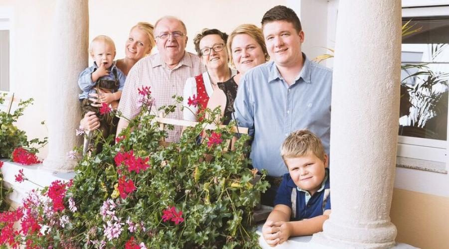
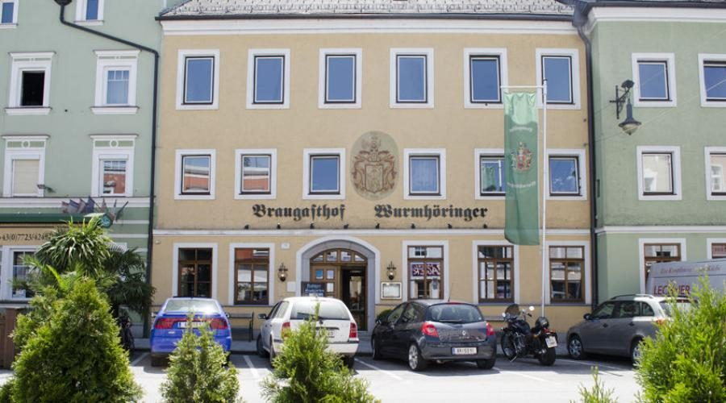

Ein Unternehmen wie wir
Ein herzliches Grüß Gott aus dem schönen Altheim, wo wir daheim sind. Im Herzen des Innviertels arbeiten wir als Familienunternehmen, das Heimat- und Naturverbundenheit lebt – als Privatbrauerei, Braugasthof und als Transport- und Handels GmbH.
Was lange währt, bleibt ewig gut
1652 erstmals urkundlich erwähnt und seit 1885 im Besitz der Familie Wurmhöringer, blickt unsere Privatbrauerei heute auf eine lange Geschichte zurück. Seither gilt für unsere Braumeister: traditionelle Rezeptur, bester Geschmack und höchste Qualität. Wir bringen aber auch immer wieder neue Ideen rund ums Bier – und der Erfolg zeigt, dass die Kombination von Tradition und Innovation hervorragend mundet.
- 1652Die Brauerei wird erstmals urkundlich erwähnt.
- 1885Brauereibesitzerin Maria Spindler heiratet den Braumeister Josef Wurmhöringer. Seit dieser Hochzeit wird die Kunst des Bierbrauens nur noch innerhalb der Familie weitergegeben.
- 1912Die familiäre Übergabe an Sohn Georg, der mit seiner Frau Maria Brauerei und Braugasthof führt.
- 1963Franz und Johanna Wurmhöringer übernehmen Privatbrauerei, Braugasthof und die 35 Hektar große Landwirtschaft – und gründen im Laufe der Jahre das firmeneigene Transportunternehmen.
- 1989Franz Wurmhöringer tritt die Nachfolge seiner Eltern an. Mit großer Unterstützung seiner Frau Gudrun werden Sudhaus, Gärkeller, Lagerkeller und Flaschenfüllanlage auf den neuesten Stand der Technik gebracht; zuletzt sorgt die Modernisierung der Verpackungsabteilung dafür, dass es die Traditionsbiere auch in praktischen Kästen gibt.
- HeuteSohn Franz Claus Wurmhöringer übernimmt das Familienunternehmen in fünfter Generation. Schon als kleiner Junge entdeckte er die Faszination am Bier und lernte von seinem Vater die Kunst des Bierbrauens – als jüngster Braumeister seiner Generation.

Interview mit dem Braumeister
HT1 hat Franz Claus Wurmhöringer – den jüngsten Braumeister Österreichs – zum Generationswechsel und zur Braukunst befragt.
Unsere Philosophie ist ganz einfach: das Beste für Sie
Kein teures Werbebudget
Wir verzichten auf aufwendige und teure Medien-Werbung. Ein Produkt mit hervorragendem Preis-Leistungs-Verhältnis wirbt für sich selbst.
Inhalt vor Verpackung
Wir verzichten auf eine teure „Verpackung“ der Flaschen, weil letztendlich der Inhalt zählt.
Eigener Fuhrpark
Mit eigenen Fahrzeugen transportieren wir unsere Getränke bis zum Verkaufspunkt. Das reduziert die Kosten deutlich.
Moderne Anlagen
In der Herstellung arbeiten wir mit hochmodernen Produktionsanlagen, mit denen wir kostengünstig produzieren.
Schlanke Struktur
Mit einer extrem schlanken Organisationsstruktur und gut ausgebildeten, hochmotivierten Mitarbeitern erzielen wir eine hervorragende Produktivität.
Ressourcen schonen
Wir produzieren – nicht nur aus Kostengründen – möglichst ressourcenschonend und gehen mit unserer Umwelt verantwortungsvoll um.
Wir haben das beste Team
Nur qualifizierte und motivierte Mitarbeiter machen ein Unternehmen wettbewerbsfähig – das ist unser Grundsatz. Deshalb setzen wir alles auf ein hervorragendes Betriebsklima und sinnvolle Weiterbildung. Sie merken das an unserem Engagement und am aufmerksamen, herzlichen Service.
Unser Unternehmen ist nur so gut und wertvoll wie unsere Mitarbeiter. Gemeinsam halten wir unsere Werte hoch:
Für alle Talente stehen unsere Türen offen
Um die erstklassige Qualität unserer Produkte liefern zu können, brauchen wir immer wieder Verstärkung – zum Beispiel:
- Brau- und Getränketechniker/in (Brauerei)
- Gastronomiefachmann/-frau (ehemals Koch- bzw. Kellner-Lehre, Braugasthof)
Übrigens: Ein positiver Berufsschulabschluss und die erfolgreiche Ablegung der Lehrabschlussprüfung sind Voraussetzung für eine etwaige höhere berufliche Qualifikation wie die Meisterprüfung oder die Berufsreifeprüfung.
Kontakt: info@wurmhoeringer.at oder +43 7723 422 04. Wir freuen uns auf Ihre Bewerbung.
Unser Team. Ihr Ziel. 100 % Leistung.
Jahrelange Erfahrung ist Ihr Vorteil: Die Wurmhöringer Transport- und Handels GmbH hat sich auf Transporte im Schüttgutverkehr spezialisiert. Im Straßentransport kommen Schüttgut-Fahrzeuge aller Art mit einer Kubatur bis 95 m³ für feste Rohstoffe und Mineralien zum Einsatz. Bei den Kippfahrzeugen handelt es sich vorwiegend um Rückwärtskipper mit Getreideschieber und Schubboden.
Unser betriebseigener, moderner Fuhrpark gibt uns und Ihnen die Sicherheit, große Aufträge ordnungsgemäß und termingerecht zu erfüllen. Mit dem einheitlichen Erscheinungsbild unserer Fahrzeuge in Grün und Silber setzen wir auf Österreichs Straßen seit vielen Jahren ein deutliches Zeichen.
Wenn auch Sie Engagement, Zuverlässigkeit und Professionalität zu einem guten Preis schätzen, dann sollten wir uns gemeinsam auf den Weg machen.
Was auf den Kipper darf
- Obst: Äpfel, Birnen …
- Gemüse: Rüben, Kartoffeln …
- Getreide: Gerste, Weizen, Hafer, Roggen …
- Saatgut jeder Art: Mais, Raps, Hirse …
- Mischfutter, Pellets, Hackschnitzel, Späne …
- Granulate, Kunststoff, Glas …
… wo’s Herz dahoam is
Altheim liegt im Herzen der Bierregion Innviertel. Ob Ruhe, Erholung, Sport, Abenteuer, Kultur oder Natur – fühlen Sie sich wie daheim bei uns und drumherum in der Region.
Römer-Erlebnismuseum „Ochzethaus“
www.ochzethaus.at
Therme Geinberg
ca. 3 km entfernt · www.therme-geinberg.at
Freibad Altheim
27 bis 29 °C warm ist das Wasser des großzügigen Freibades – gebracht auf vorsommerliche Temperaturen mit der Energie des Altheimer Thermalwassers.
Golfclub Kobernaußerwald
ca. 14 km entfernt · www.gckobernausserwald.at
Baumkronenweg Kopfing
Einzigartig in Europa · www.baumkronenweg.at
Klostergarten & Wallfahrtskirche Maria Schmolln
www.klostergarten.at
Naturschule St. Veit/Innkreis
5273 St. Veit 35 · Petra Langmaier · Tel. +43 7723 6113
KTM Motohall
KTM Platz 1, 5230 Mattighofen · www.ktm-motohall.com
Und dazu
servieren wir Ihnen die köstlichen Innviertler Schmankerl und ein frisch gezapftes Bier aus unserer Brauerei. Tisch reservieren